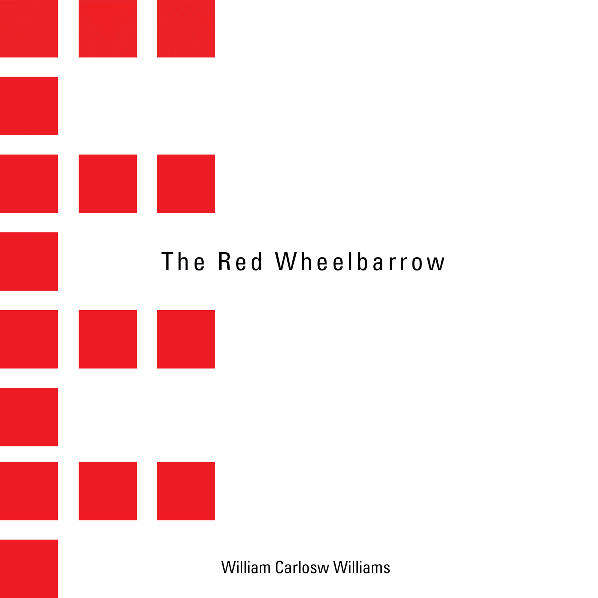

Created a timeline focusing on the areas where typographical revolution happened.
Mask Party Invitation
"Expressions" is Mask Party. Noh mask show no expression. However, once we wear the mask, our face is hidden and our emotion will be expressed at the same time. (Noh:traditional Japanese performing art)
Poster Series for Packaging Workshop
Traditional Japanese culture used natural materials, such as straw, paper and cloth, as packaging.
MM.LaFleur
Brand Assets
The Language of Flowers
Each flower has a specific meaning.
Using each flower, create the initial of the language of flowers.
A Interactive Photo Essay
"Nobody is here"
There is nobody in a beach during the winter except for me.
Book Mapping Project

"The Red Wheelbarrow" is well known as a minimalist masterpiece by poet William Carlos Williams.
Knewton
The Knowledge Graph
DIRECTOR'S POSTER SERIES
These posters are series of movie directed by Akira Kurosawa.
To express the relationship with each main character, picking up the accurate colors and shapes.
Rebranding for Yarn Company
Yarn creates new forms depending on the creators' ideas.
To represent the flexibility and potential of yarn, the branding is kept simple and minimal.
Exhibition Design
This exhibition, EPHEMERAL GLIMPSES OF MAN RAY, shows his sense of beauty through his eyes.
Silkscreen Prints
Breathe by Yoko Ono.
Every time we breathe, it ushers in a new spirit.